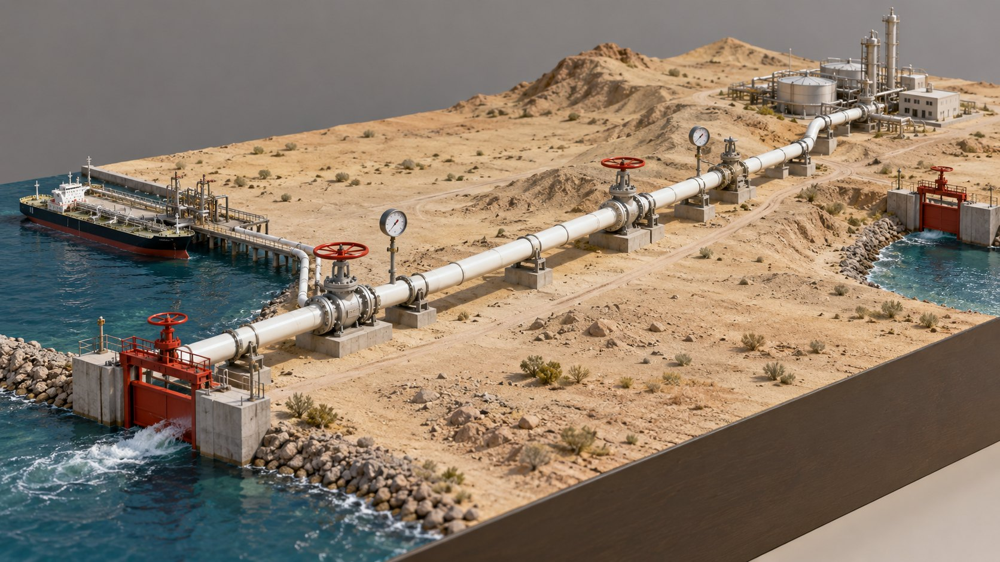

Saudi Arabia routed its oil around Hormuz through a 1,200 km pipe to the Red Sea. In 2026 both the strait and the detour came under attack.
Ras Tanura loads on the Gulf, behind the Strait of Hormuz. Yanbu loads on the Red Sea, behind Bab el-Mandeb. One pipe joins them. In February 78 ships a day crossed Hormuz and 37 crossed Bab el-Mandeb.
Each gate is an open valve: the wheel turns as that strait's traffic falls against February 2026. The pipe route is schematic.
Ref S1 S8 S30
The IRGC declared the strait closed on 2 March. Transits fell from 78 a day in February to 3 in March. They reached 13 in June and 4 in September.
One mark is one transit a day, monthly average. Red marks are February transits that did not happen. A US-facilitated count gives 26.7 a day for September; a different definition, so this deck uses PortWatch.
Ref S1 S4 S26
Aramco ran the East-West pipeline at its 7.0 million barrels a day maximum by late March. About 2 stayed in Saudi refineries and about 5 left from Yanbu. Two pipes, 13 pump stations.
EIA lists 5 as capacity and calls 7.0 a 2019 temporary expansion. Aramco calls 7.0 the 2026 maximum. This deck shows both ticks on the dial.
Ref S3 S6 S8
Yanbu loaded 0.75 to 0.97 million barrels a day in the second quarter of 2025. It reached 4.1 in June and 3.75 in July. Vortexa data put August near half of July.
Point estimates from different sources, not one series. The 2025 baseline is 0.75 (Kpler) or 0.97 (Reuters), drawn as the midpoint. August is derived: half of July.
Ref S7 S9 S10 S11
The truce broke on 13 July and a blockade of Saudi shipping followed on 20 July. This ledger counts each itemised strike: hits, interceptions and claims nobody has confirmed.
Windward counts eight Saudi tankers claimed struck by 5 August; only three are itemised here. The Yanbu and Riyadh strikes were on 24 September (Reuters). Launch points and ship positions are schematic.
Ref S5 S12 to S19
| Date | Where | Marks |
|---|
Bab el-Mandeb carried 256 ships a week in June. By the week of 14 September it carried 173. Tanker transits fell from 97 to 46.
One mark is one transit. June is the average of four weeks; the week of 13 July peaked at 284. Lloyd's List counts 290 for the week to 27 September, PortWatch 190. This deck uses PortWatch.
Ref S1 S25
Drones hit pumping stations on 10 September and Saudi Arabia shut the line. It restarted on 22 September. On 29 September Kpler put flow at 2.65 million barrels a day, against 5.5 before.
Two stations damaged by one count, three by another; the third is drawn open. Other flow estimates run 2.0 to 3.5. A 2 October secondary report of near 6 is unconfirmed.
Ref S17 S20 to S23
Yanbu hull cover costs about 3% and south Saudi ports up to 7%. A supertanker earned $1.29 million a day on 24 September, against $678,000 in August. The Suez route to Asia adds about 22 days.
Hormuz cover runs 6 to 9%. On 23 July the western Saudi route paid 0.1%. Ghost needles show the earlier reading; red needles the latest.
Ref S7 S23 S24
Brent spot was $71 before the war and peaked at $138 on 7 April. It fell to $69 on 2 July, then climbed with the Saudi front: $105 after the tankers on 23 July, $131 on 15 September.
FRED spot price. Futures differ, and one chronology gives lower intraday highs.
Ref S2
| No | Date | Brent | Event |
|---|
One cut is a bad month. Two at once is the risk: another pipeline hit while Bab el-Mandeb is unsafe. Rystad says Brent would very likely pass $150 if that strait is unsafe. Oil in the ground is not oil delivered.
Select a row to set the valves. Valve positions illustrate each case; they are not forecasts. Case A is analyst judgment.
| Case | Indicators to watch |
|---|---|
| A. Muddle base case | Pipe back to 5 to 7 by late October. Kpler Yanbu loadings above 4. Bab el-Mandeb 180 to 200 a week. Saudi supertanker transits (19 in the week of 14 Sep). |
| B. Truce | Sanaa answers the Oman offer (made 18 Sep, no reply yet). Strikes on Jizan and Yanbu stop. Yanbu cover falls below 3%. |
| C. Double cut | Bab el-Mandeb tanker transits under 40 a week. Yanbu storage, 5 to 7 days of cover. New strikes on pump stations. |
| D. Hormuz reopens | Hormuz transits (3.7 a day in September). The US-Iran reply to Iran's seven-point plan. |
The danger is not one broken route. It is losing the fallback too.
Every figure on a plate traces to one entry below. "Read" means the builder opened or searched the source on 3 Oct 2026. "Brief" means the figure comes from the research brief and was not re-fetched. Place coordinates and the pipe route are general geography and schematic.